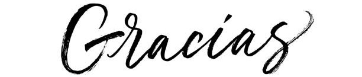

Como me proyecto
Aquí encontrarás lo que espero lograr en los siguientes años, aquellas metas o caprichos que tengo en mente y me esfuerzo cada día intentando conseguirlos
- Conocimiento
- Vida personal
Está claro que planeo terminar la carrera exitosamente, pero además soy un enamorado del conocimiento, siempre me ha gustado aprender, expandir mi conocimiento en diferentes ramas, estoy seguro que seguiré estudiando o volveré a estudiar nuevamente después de completar este pregrado de ingeniería informática.
La cuestión es que estudiaré, también son importantes las razones, en mi parte académica planeo especializarme en inteligencia artificial o analisis de datos, ambas me causan intriga e interés suficiente para seguir estudiandolas para lograrlas desempeñar en un futuro, pero ademas me gustaria experimentar en nuevas ramas, áreas como la psicología siempre me ha causado curiosidad, y no descarto estudiarla solo con el fin de aprender.
La cosa es expandir mi conocimiento con el fin de crecer a un nivel personal sin descuidar mi camino profesional, que está orientado indudablemente en el mundo de a la tecnología.
De mi solo puedo esperar una cosa, cuidar mis amistades y relaciones, espero poder seguir haciendo las cosas que me gustan al lado de la gente que aprecio, me gusta hacer favores y estar cuando ellos lo necesitan, esto cuando no me veo comprometido y observo reciprocidad
